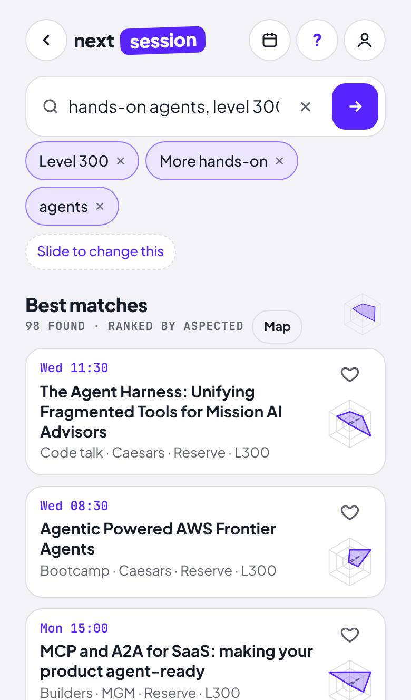

what you askedwhere you started
Aspect Database weighs every part of a question at once, and shows why each answer fits.
See it work on something you know.
Pick one. Each plays in a few seconds.
Same question. Different answer.
Plain vector search · text only
What it read
- Framework Agreement v3.1a draft · 120 days
- “FINAL” copyteam site · 60 days
- Framework Agreement v3.0published · 90 days
That answer came from a draft.
Aspected · meaning, lifecycle, source
What it read
- Framework Agreement v3.0published · 90 days
- Framework Agreement v3.1kept out · a draft
- “FINAL” copykept out · a team-site copy
That answer came from the published version.
One thing changed, at the bottom.
In every database today, a field like price, version or date can only be a filter: in or out. In Aspected, every field becomes an aspect. It has a distance to your question and a weight in the ranking. That is what lets a whole sentence go in, and what lets every answer show its reasons.
Read why it works →In their words.
“Aspected has added the context Microsoft Copilot needed. The answers are now perfectly aligned with how we organize and use our information.”
“I was experimenting with Copilot Studio… the results were not yet at the standard we needed in response speed, accuracy, and the quality of the feedback.”
“Aspected includes all context directly in the search query upfront. This enables immediate governance, cuts search times in half, and delivers maximum accuracy at lower cost.”
“The aspect model gives you, and an agent, real levers to shape relevance per query that a plain vector store simply can't.”
“Aspected is a back-end technology that improves speed and accuracy. You do not have to interact with a separate Aspected interface.”
“You guys are purely unique in this space… there's your ROI, isn't it?”
Try it now
Three ways in. Pick the one that fits how you work.
Point your AI at one page
Read https://aspected.com/start.md and get Aspected running on my machine, with my data.
Run it on your data
Send us a sample. We run it with you in 20 minutes, on a question you can't answer today.
Book 20 minutes ↗People ask for several things at once.
Search engines answer with one blended score. We built a database that keeps every aspect of the question, with its weight, and shows why each result is there.
Xillio starts moving enterprise content: 1,000+ projects for 250+ organisations, including NASA, KLM and Moody's.
Rikkert Engels founds Aspected in Hilversum with co-founders Corné van Leuveren and Jorn Verhoeven. Xillio stays on as implementation partner.
US patent 12,517,879 granted for the method. PCT application filed.
Agfa and Mosaic Community Health run Aspected under Copilot, in production.
samebutbetter.food goes live on 45,000 Dutch supermarket products.
Vegas, an independent session finder, goes live for the AWS week in Las Vegas.
45 people in Hilversum, the Netherlands.
Why Aspected answers differently.
Plain vector search turns your question into one score. Aspected keeps each part of it, weighs them, and shows which one decided.
See the same question answered twice →How does it know what you asked?
Each field in your data becomes an aspect: text for meaning, a list for type or status, a number, a date. For documents they come from where the document lives: version, status, owner, location.
Copilot, Claude or your agent reads the question and fills in the aspects it recognises. What it doesn't recognise stays open and doesn't count.
our standard framework agreement
It ranks every record on all filled-in aspects at once, in one calculation, and keeps the distance per aspect. That distance is the receipt.
The word that gets thrown away.
“This pasta sauce, but with less sugar, same price.” Search today breaks that into a query and two filters, and the most important word, but, is thrown away before the search starts. Aspected weighs the whole sentence in one calculation.
One thing changed, at the bottom.
In every database today, a field like price, version or date can only be a filter: in or out. In Aspected, every field becomes an aspect, with a distance to your question and a weight in the ranking. That is what lets a whole sentence go in, and what lets every answer show its reasons.
Questions people ask
Short answers. For the details, read the docs or ask us.
How it compares
Isn't Aspected a vector database too?
Yes. The difference is what goes into the vector. A plain vector search embeds the text, so meaning is all it sees. Aspected builds the vector from aspects, such as meaning, version, date, source or price, each with its own weight, and ranks on all of them in one calculation.
Is this sparse vector search?
In our sense, yes: you ask with only the aspects you care about, and the ones you leave out don't count. It is not the "sparse vectors" of keyword-style retrieval such as SPLADE, where each dimension is a word.
Isn't that just a filter?
A filter says yes or no and drops everything else, including the almost-right. An aspect says how close a record is, so a near match still ranks, only lower.
How is it different from hybrid search, boosting or a reranker?
Those add rules or a second model on top of one score, and every rule interacts with the others. Aspected ranks on all aspects in the first pass and shows the distance per aspect.
Using it
Do I need to clean my data first?
No. Search today shortlists on one score before anything else is checked, so an old draft can beat the current version. Aspected weighs every aspect of every record, so an old or stray document has a different profile and sinks. Clean data still helps; it is no longer a precondition.
How does Aspected know what my question is about?
Your AI tells it. Copilot, Claude or your agent turns the question into values for the aspects in your index, such as type, status or date. Aspected ranks on those aspects and keeps the distance per aspect, so you can see which one decided.
Do I still need a language model?
To write the answer, yes. To decide which documents it reads, no: ranking is a calculation.
Does it replace Copilot or my vector database?
It replaces the retrieval step. Copilot, your chat or your agent stays the screen and reads from Aspected over MCP or the REST API.
Who decides what counts?
You do. Every query can weigh its aspects differently, so the people who own the content decide what counts, not a model.
Can I see why a document was used?
Yes. Every answer comes with a receipt: what was used, what was kept out and which aspect decided. It shows why a document was selected, not that the answer is right.
Trust and deployment
Where does my data live?
In your own Azure or AWS tenant, inside your VPC, including AWS European Sovereign Cloud. Aspected is also on the Azure and AWS marketplaces.
Is it patented?
Yes. US patent 12,517,879, “Multi-aspect vector search index creation and retrieval method and system”, granted 6 January 2026 to Xillio AI, invented by Rikkert Engels and Jorn Verhoeven. A PCT application is filed. Read the patent ↗
Three ways in.
Pick the one that fits how you work.
Docker and the docs
One Docker image with a REST API and Aspected Studio. Running on your machine in about five minutes.
Show the commands ↓ 2Point your AI at one page
Give Claude, or any AI with a terminal, one link. It reads the steps, starts Aspected and loads your data.
Get the link ↓ 3Run it on your data
Upload a spreadsheet and get a search page, or send us a sample and we run it with you.
See how ↓Docker and the docs
docker pull xillio/aspected:latest docker run -p 8080:8080 xillio/aspected:latest curl http://localhost:8080/indexes
Then open Aspected Studio at localhost:8080/studio, or follow the tutorial to create, train and search your first index. GPU images, the license key and security settings are in the docs.
Point your AI at one page
Paste this line into Claude Code, Claude or another AI that can use a terminal.
Read https://aspected.com/start.md and get Aspected running on my machine, with my data.
That page is written for AIs: plain steps taken from the docs, with the moments it should stop and ask you.
Run it on your data
Upload a spreadsheet
Drop a CSV or Excel file. Aspected finds the aspects and gives you a search page to share, within minutes.
Send us a sample
We run it on your data with you, in a 20-minute session. Bring a question you can't answer today.
Book 20 minutes ↗Get your data ready
- One row per thing people look for.A product, a document, a session or a contract. Not one row per sale or per page.
- Columns become aspects.Each gets a resolver: text for descriptions, number for price or size, enum for a fixed list such as type or department, datetime for dates.
- One unit per column.All grams or all kilos, all euros or all dollars. Mixed units look like outliers.
- Empty means unknown.Leave a value empty when you don't know it. A zero is read as a real zero.
- Say which version counts.For documents, keep version, status (draft, published, superseded), owner and source. They decide which copy the AI reads.
- Keep the copies.Don't clean out near-duplicates first. Aspected finds them and shows what separates them.
Documents on file shares or SharePoint? Xillio's connectors bring them in with their version, date, owner and department.
Stand behind every answer your AI gives.
Every answer shows which document it came from, which ones were left out, and why.
The risk nobody owns yet.
One supplier contract, three versions: a draft that says 30 days, a draft that says 60, and the signed one that says 90. They read almost the same, so the AI can pick any of them. Think of a quote that goes out with last year's terms.
What if every answer had a receipt?
Pick a question. You get the answer, and the receipt with it.
How did it decide? Move the weight.
Aspected weighs content, status, location, client and date in one calculation. Turn this weight down and see what the AI would have read.
A receipt does not prove an answer is true. It proves what went in, and why. So when an answer is wrong, it points at the document to fix.
Purview tells you which files Copilot read. The receipt tells you whether they were the right ones.
Who decides what counts?
The people who own the content. Aspected weighs content, status, location, client and date in one calculation, and proposes which version counts. The record owner confirms, and sets the weight once as policy for every assistant.
- Keep
- Yes, retention duty
- Counts for AI
- No, replaced by 2025
- Decided by
- Head of Purchasing, 14 October
- Approved by
- Legal, 15 October
Soon your AI will act, not only answer.
A person reads ten search results, or one chat answer. An agent reads nothing back: it acts. One wrong document at the first step then decides every step after it.
Relevance only
- Find the agreementVersion 3.1 · draft
- Read the notice period120 days
- Draft the letter120 days
- Send it to the supplierSent · 120 days
With Aspected · the valid version
- Find the agreementVersion 3.0 · published
- Read the notice period90 days
- Draft the letter90 days
- Send it to the supplierSent · 90 days
A layer of your own, under the AI you already use.
Runs as an MCP server in your Microsoft tenant. Copilot stays the screen.
Claude, Mistral, Bedrock agents or your own assistant over MCP, your apps over the REST API. You can switch later.
Azure or AWS, inside your VPC, including AWS European Sovereign Cloud.
The index and the receipts are yours, exportable in an open format.
In production under Copilot at Agfa and Mosaic Community Health. Patented: US 12,517,879. Implemented with Xillio, after 1,000+ content projects for 250+ organisations.
Start with one department.
Two weeks, twenty questions, one expert of yours. Read-only access.
Three ways organisations use Aspected.
Same database underneath. Pick the problem you have today.
The AI model is here. Your knowledge isn't yet.
Copilot and your own AI find the right document across all your sources, and show why.
Agfa and Mosaic, in production Ready for AIKnow what counts before your AI reads it.
Copies, drafts and old versions on file shares and SharePoint, settled with their reasons.
With Xillio Catalogue searchLet people say what they want.
“Like this, but…” on your products, sessions or listings.
samebutbetter.food and Vegas, liveThe AI model is here. Your knowledge isn't yet.
Aspected makes your knowledge reachable for Copilot and your own AI, without moving documents. And every answer shows where it came from.
Why AI disappoints after the demo.
Where your knowledge lives.
| Source | Copilot today | With Aspected |
|---|---|---|
| SharePoint and Teams | Reachable | Reachable, with status and version |
| Document systems (OpenText, Documentum, FileNet) | Not without a connector | Connected, rights still apply |
| Network drives | Not without a connector | Connected |
| Wikis (Confluence) | Not without a connector | Connected |
| CRM and ERP | Not without a connector | Connected |
| Archives | Not without a connector | Connected |
60+ connectors, implemented with Xillio. The source stays the source.
How it works.
Documents stay where they are. Permissions still apply.
Aspected infers type, client, date and status, and groups versions. It proposes which one counts; you confirm.
Every answer comes with a receipt: what was used, what was left out, and why.
A layer of your own, under the AI you already use.
Runs as an MCP server in your Microsoft tenant. Copilot stays the screen.
Claude, Mistral, Bedrock agents or your own assistant over MCP, your apps over the REST API. You can switch later.
Azure or AWS, inside your VPC, including AWS European Sovereign Cloud.
The index and the receipts are yours, exportable in an open format.
“Aspected has added the context Microsoft Copilot needed.”
“You do not have to interact with a separate Aspected interface.”
Start with one department.
Two weeks, twenty questions, one expert of yours. Read-only access.
Examples: Healthcare · Manufacturing and field service · Government
Know what counts before your AI reads it.
File shares and SharePoint hold years of copies, drafts and old versions. Aspected shows which one counts and why, so Copilot or your migration starts from the right one.
See it on your own share.
With Xillio.
Xillio has moved content for organisations since 2004: 1,000+ projects for 250+ organisations. Its connectors bring documents in with their version, date, owner and department. You settle what matters and leave the rest.
Examples: Legal and finance · Government
Let people say what they want.
Shoppers and visitors point at something and say what should change. Aspected keeps what they liked and moves the rest.
Two of them are live.
Examples: Retail and e-commerce · Events and learning
Same engine, your world.
Each page shows the showcases that matter there, and who already runs Aspected.
Start with one department.
Two weeks, twenty questions, one expert of yours. After that you know whether you can stand behind the answers.
What it takes.
Read-only access to that department's sources. Documents stay where they are, and permissions still apply.
How the two weeks go.
Your expert writes down twenty questions people ask, and which document should answer each one.
We connect the department's sources. Nothing moves and nothing is changed.
Every question gets an answer and a receipt: what was used, what was kept out, and why.
Your expert compares each answer with their own pick. Where they differ, the receipt points at the document to fix.
The expert.
The person people already ask which version is current. They know which document counts, so their picks are the yardstick. After two weeks you decide whether to go further.
Plan the two weeks.
Tell us which department you have in mind.
NewAspect Database
Introducing Aspect Database.
A vector database that keeps every aspect of a question, such as meaning, version, date, source or price, each with its own weight. It ranks on all of them in one calculation and shows why each answer fits.
What's new.
A vector database
Framework Agreement v3.1 draft
One vector, from the text
Score 0.91, ranked first.
One number. A draft reads like the signed version, so it scores like one, and nothing says why.
Aspect Database
Framework Agreement v3.1 draft
One vector, built from aspects
Kept out. Decided by status.
A distance per aspect, each with its weight. You see which one decided.
What it lets you do.
“This one, but less sugar.” The whole sentence goes in, the but included.
See it on groceries → See whyEvery answer comes with a receipt: what was used, what was kept out, and which aspect decided.
See the receipt → Decide what countsThe people who own the content set the weights, once, for every assistant.
For CIOs →Proof.
“Multi-aspect vector search index creation and retrieval method and system.” Granted 6 January 2026. Inventors Rikkert Engels and Jorn Verhoeven. PCT application filed.
Read the patent ↗samebutbetter.food on 45,000 supermarket products. Vegas on 2,447 conference sessions.
Groceries →Conference sessions →Where it comes from.
Built by the team behind Xillio, after 1,000+ content projects for 250+ organisations. They kept seeing the same thing: the right document was there, but search could not tell it from its copies.
Our story →Try it today.
docker run -p 8080:8080 xillio/aspected:latest
The search behind next session.
You said what you were after and got sessions that fit, each with a why. That is Aspected. Here is how it works, and how to run it on your own data.

How it understood you.
hands-on agents, level 300
Your words fill in three aspects. 98 sessions come close, best first.
like ANT319, but deeper
Start from a session you liked and move one aspect. The rest stays close.
Mon 10:30Securing AI agents: Governance patterns for regulated workloadsChalk talk · L300
The why? under each session is this: the distance per aspect.
Every session carries its aspects: topic, level, format, room size, day and time. Your words fill some in, the sliders set the weights, and Aspected weighs them all in one calculation. No filters, so the almost-right session still shows up, only lower.
Run it on your own data.
Same database, on your catalogue, documents or tickets. On your laptop tonight, in your AWS account later.
Point your AI at one page
Read https://aspected.com/start.md and get Aspected running on my machine, with my data.
In your AWS account
Inside your VPC. Bedrock agents read it over MCP, your apps over the REST API. Also on AWS Marketplace.
Get started →“The aspect model gives you, and an agent, real levers to shape relevance per query that a plain vector store simply can't.”
Also live: samebutbetter.food, on 45,000 supermarket products. All showcases →
Here this week? Let's talk.
Twenty minutes, on a question from your own data.
next session is an independent session finder, not affiliated with AWS.
Pay for searches and records.
Nothing else. Every showcase, API and agent bills the same way.
€0.50 per 1,000 records a month. Rates fall with volume. Pay by card.
Get startedRuns in your own Azure or AWS tenant, including AWS European Sovereign Cloud. With Xillio and partners.
Book a call ↗Proposed list prices, November 2026. They may change at launch.